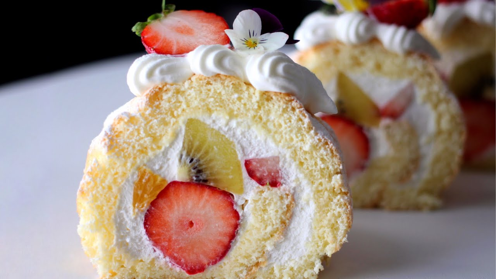

Fruit Cake Japanese

This is a simple fruit cake Japanese recipe.
Ingredients:
- 1 cup all-purpose flour
- 1/2 cup sugar
- 1/2 cup unsalted butter, softened
- 2 large eggs
- 1/4 cup milk
- 1 teaspoon vanilla extract
- 1/2 cup mixed dried fruits (such as raisins, candied orange peel, and chopped nuts)
- 1/2 teaspoon baking powder
- 1/4 teaspoon salt
Instructions:
- Preheat your oven to 350°F (175°C). Grease and flour a 9-inch round cake pan.
- In a large bowl, cream together the butter and sugar until light and fluffy. Beat in the eggs one at a time, then stir in the vanilla extract.
- In a separate bowl, whisk together the flour, baking powder, and salt. Gradually add the dry ingredients to the wet ingredients, alternating with the milk, beginning and ending with the dry ingredients. Fold in the mixed dried fruits.
- Pour the batter into the prepared cake pan and smooth the top. Bake for 30-35 minutes, or until a toothpick inserted into the center of the cake comes out clean.
- Allow the cake to cool in the pan for 10 minutes, then turn it out onto a wire rack to cool completely.
Home